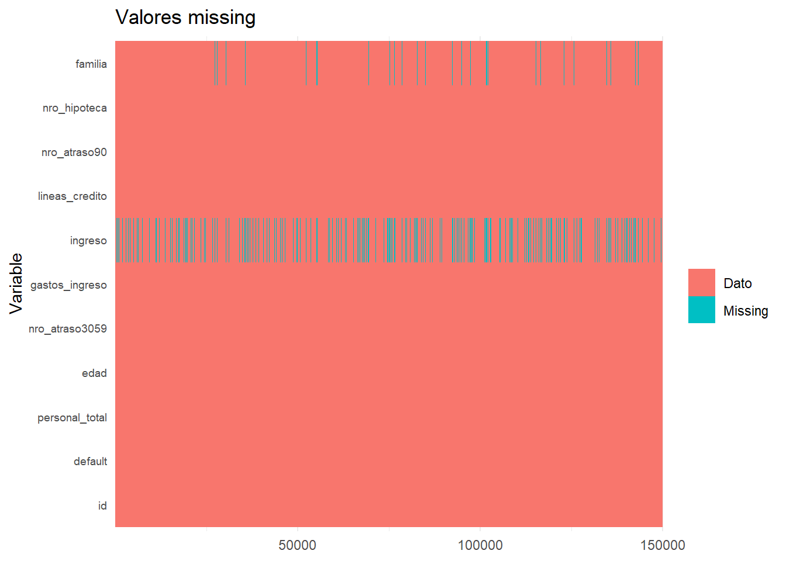
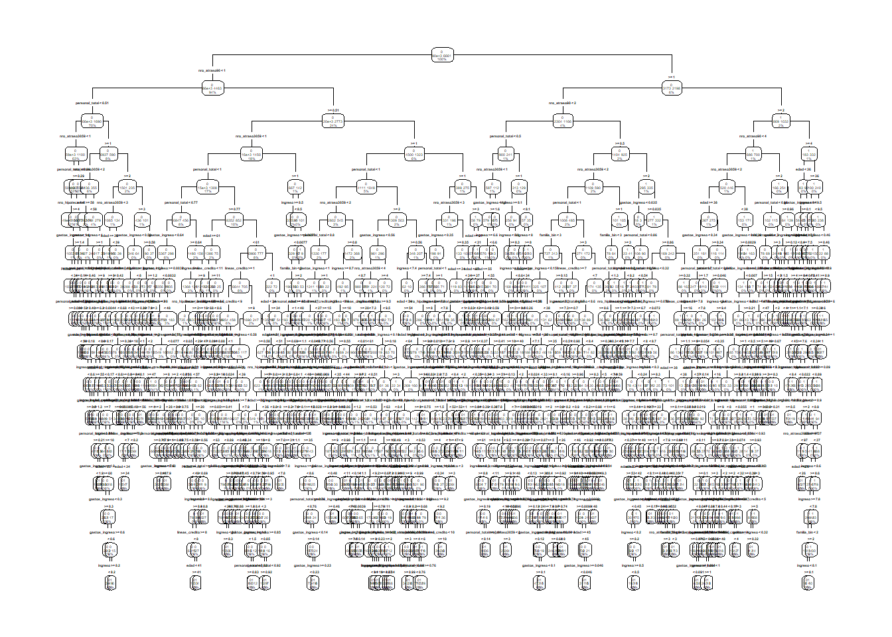
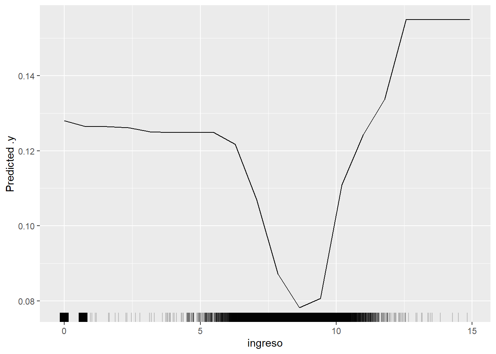

<!DOCTYPE html>
<html lang="es" xml:lang="es">
<head>

  <meta charset="utf-8" />
  <meta http-equiv="X-UA-Compatible" content="IE=edge" />
  <title>Capítulo 10 Trabajo Practico | Politica Economica II</title>
  <meta name="description" content="UNLP" />
  <meta name="generator" content="bookdown 0.35 and GitBook 2.6.7" />

  <meta property="og:title" content="Capítulo 10 Trabajo Practico | Politica Economica II" />
  <meta property="og:type" content="book" />
  
  <meta property="og:description" content="UNLP" />
  <meta name="github-repo" content="msangia/msangia.github" />

  <meta name="twitter:card" content="summary" />
  <meta name="twitter:title" content="Capítulo 10 Trabajo Practico | Politica Economica II" />
  <meta name="twitter:site" content="@msangia" />
  <meta name="twitter:description" content="UNLP" />
  

<meta name="author" content="Máximo Sangiácomo" />


  <meta name="viewport" content="width=device-width, initial-scale=1" />
  <meta name="apple-mobile-web-app-capable" content="yes" />
  <meta name="apple-mobile-web-app-status-bar-style" content="black" />
  
  
<link rel="prev" href="arboles.html"/>
<link rel="next" href="bibliografia-1.html"/>
<script src="libs/jquery-3.6.0/jquery-3.6.0.min.js"></script>
<script src="https://cdn.jsdelivr.net/npm/fuse.js@6.4.6/dist/fuse.min.js"></script>
<link href="libs/gitbook-2.6.7/css/style.css" rel="stylesheet" />
<link href="libs/gitbook-2.6.7/css/plugin-table.css" rel="stylesheet" />
<link href="libs/gitbook-2.6.7/css/plugin-bookdown.css" rel="stylesheet" />
<link href="libs/gitbook-2.6.7/css/plugin-highlight.css" rel="stylesheet" />
<link href="libs/gitbook-2.6.7/css/plugin-search.css" rel="stylesheet" />
<link href="libs/gitbook-2.6.7/css/plugin-fontsettings.css" rel="stylesheet" />
<link href="libs/gitbook-2.6.7/css/plugin-clipboard.css" rel="stylesheet" />


<link href="libs/anchor-sections-1.1.0/anchor-sections.css" rel="stylesheet" />
<link href="libs/anchor-sections-1.1.0/anchor-sections-hash.css" rel="stylesheet" />
<script src="libs/anchor-sections-1.1.0/anchor-sections.js"></script>
<html>
  <head>
	<link rel="shortcut icon" href="images/favicon.png" />
  </head>
  <body>
  </body>
</html>


<style type="text/css">
pre > code.sourceCode { white-space: pre; position: relative; }
pre > code.sourceCode > span { display: inline-block; line-height: 1.25; }
pre > code.sourceCode > span:empty { height: 1.2em; }
.sourceCode { overflow: visible; }
code.sourceCode > span { color: inherit; text-decoration: inherit; }
pre.sourceCode { margin: 0; }
@media screen {
div.sourceCode { overflow: auto; }
}
@media print {
pre > code.sourceCode { white-space: pre-wrap; }
pre > code.sourceCode > span { text-indent: -5em; padding-left: 5em; }
}
pre.numberSource code
  { counter-reset: source-line 0; }
pre.numberSource code > span
  { position: relative; left: -4em; counter-increment: source-line; }
pre.numberSource code > span > a:first-child::before
  { content: counter(source-line);
    position: relative; left: -1em; text-align: right; vertical-align: baseline;
    border: none; display: inline-block;
    -webkit-touch-callout: none; -webkit-user-select: none;
    -khtml-user-select: none; -moz-user-select: none;
    -ms-user-select: none; user-select: none;
    padding: 0 4px; width: 4em;
    color: #aaaaaa;
  }
pre.numberSource { margin-left: 3em; border-left: 1px solid #aaaaaa;  padding-left: 4px; }
div.sourceCode
  {   }
@media screen {
pre > code.sourceCode > span > a:first-child::before { text-decoration: underline; }
}
code span.al { color: #ff0000; font-weight: bold; } /* Alert */
code span.an { color: #60a0b0; font-weight: bold; font-style: italic; } /* Annotation */
code span.at { color: #7d9029; } /* Attribute */
code span.bn { color: #40a070; } /* BaseN */
code span.bu { color: #008000; } /* BuiltIn */
code span.cf { color: #007020; font-weight: bold; } /* ControlFlow */
code span.ch { color: #4070a0; } /* Char */
code span.cn { color: #880000; } /* Constant */
code span.co { color: #60a0b0; font-style: italic; } /* Comment */
code span.cv { color: #60a0b0; font-weight: bold; font-style: italic; } /* CommentVar */
code span.do { color: #ba2121; font-style: italic; } /* Documentation */
code span.dt { color: #902000; } /* DataType */
code span.dv { color: #40a070; } /* DecVal */
code span.er { color: #ff0000; font-weight: bold; } /* Error */
code span.ex { } /* Extension */
code span.fl { color: #40a070; } /* Float */
code span.fu { color: #06287e; } /* Function */
code span.im { color: #008000; font-weight: bold; } /* Import */
code span.in { color: #60a0b0; font-weight: bold; font-style: italic; } /* Information */
code span.kw { color: #007020; font-weight: bold; } /* Keyword */
code span.op { color: #666666; } /* Operator */
code span.ot { color: #007020; } /* Other */
code span.pp { color: #bc7a00; } /* Preprocessor */
code span.sc { color: #4070a0; } /* SpecialChar */
code span.ss { color: #bb6688; } /* SpecialString */
code span.st { color: #4070a0; } /* String */
code span.va { color: #19177c; } /* Variable */
code span.vs { color: #4070a0; } /* VerbatimString */
code span.wa { color: #60a0b0; font-weight: bold; font-style: italic; } /* Warning */
</style>

<style type="text/css">
  
  div.hanging-indent{margin-left: 1.5em; text-indent: -1.5em;}
</style>
<style type="text/css">
/* Used with Pandoc 2.11+ new --citeproc when CSL is used */
div.csl-bib-body { }
div.csl-entry {
  clear: both;
}
.hanging div.csl-entry {
  margin-left:2em;
  text-indent:-2em;
}
div.csl-left-margin {
  min-width:2em;
  float:left;
}
div.csl-right-inline {
  margin-left:2em;
  padding-left:1em;
}
div.csl-indent {
  margin-left: 2em;
}
</style>

<link rel="stylesheet" href="css/style.css" type="text/css" />
<link rel="stylesheet" href="css/r4ds.css" type="text/css" />
</head>

<body>


  <div class="book without-animation with-summary font-size-2 font-family-1" data-basepath=".">

    <div class="book-summary">
      <nav role="navigation">

<ul class="summary">
<li><a href="./">Politica Economica II - UNLP</a></li>

<li class="divider"></li>
<li class="chapter" data-level="" data-path="index.html"><a href="index.html"><i class="fa fa-check"></i>Descripcion del curso</a></li>
<li class="chapter" data-level="1" data-path="intro.html"><a href="intro.html"><i class="fa fa-check"></i><b>1</b> Introduccion a R</a>
<ul>
<li class="chapter" data-level="1.1" data-path="intro.html"><a href="intro.html#primeros-pasos"><i class="fa fa-check"></i><b>1.1</b> Primeros pasos</a></li>
<li class="chapter" data-level="1.2" data-path="intro.html"><a href="intro.html#busacar-ayuda"><i class="fa fa-check"></i><b>1.2</b> Busacar ayuda</a></li>
<li class="chapter" data-level="1.3" data-path="intro.html"><a href="intro.html#tipos-de-datos"><i class="fa fa-check"></i><b>1.3</b> Tipos de datos</a></li>
<li class="chapter" data-level="1.4" data-path="intro.html"><a href="intro.html#limpieza-de-memoria"><i class="fa fa-check"></i><b>1.4</b> Limpieza de memoria</a></li>
<li class="chapter" data-level="1.5" data-path="intro.html"><a href="intro.html#asignación-de-valores"><i class="fa fa-check"></i><b>1.5</b> Asignación de valores</a></li>
<li class="chapter" data-level="1.6" data-path="intro.html"><a href="intro.html#operadores-aritméticos"><i class="fa fa-check"></i><b>1.6</b> Operadores aritméticos</a></li>
<li class="chapter" data-level="1.7" data-path="intro.html"><a href="intro.html#operadores-relacionales"><i class="fa fa-check"></i><b>1.7</b> Operadores relacionales</a></li>
<li class="chapter" data-level="1.8" data-path="intro.html"><a href="intro.html#operadores-lógicos"><i class="fa fa-check"></i><b>1.8</b> Operadores lógicos</a></li>
<li class="chapter" data-level="1.9" data-path="intro.html"><a href="intro.html#vectores"><i class="fa fa-check"></i><b>1.9</b> Vectores</a></li>
<li class="chapter" data-level="1.10" data-path="intro.html"><a href="intro.html#secuencias"><i class="fa fa-check"></i><b>1.10</b> Secuencias</a></li>
<li class="chapter" data-level="1.11" data-path="intro.html"><a href="intro.html#factores"><i class="fa fa-check"></i><b>1.11</b> Factores</a></li>
<li class="chapter" data-level="1.12" data-path="intro.html"><a href="intro.html#matrices"><i class="fa fa-check"></i><b>1.12</b> Matrices</a></li>
<li class="chapter" data-level="1.13" data-path="intro.html"><a href="intro.html#listas"><i class="fa fa-check"></i><b>1.13</b> Listas</a></li>
<li class="chapter" data-level="1.14" data-path="intro.html"><a href="intro.html#data-frames"><i class="fa fa-check"></i><b>1.14</b> Data frames</a></li>
<li class="chapter" data-level="1.15" data-path="intro.html"><a href="intro.html#r-base"><i class="fa fa-check"></i><b>1.15</b> R base</a></li>
<li class="chapter" data-level="1.16" data-path="intro.html"><a href="intro.html#apply-lapply-y-tapply"><i class="fa fa-check"></i><b>1.16</b> apply, lapply y tapply</a></li>
<li class="chapter" data-level="1.17" data-path="intro.html"><a href="intro.html#map"><i class="fa fa-check"></i><b>1.17</b> Map</a></li>
<li class="chapter" data-level="1.18" data-path="intro.html"><a href="intro.html#loops"><i class="fa fa-check"></i><b>1.18</b> Loops</a></li>
<li class="chapter" data-level="1.19" data-path="intro.html"><a href="intro.html#condicionales"><i class="fa fa-check"></i><b>1.19</b> Condicionales</a></li>
<li class="chapter" data-level="1.20" data-path="intro.html"><a href="intro.html#funciones"><i class="fa fa-check"></i><b>1.20</b> Funciones</a>
<ul>
<li class="chapter" data-level="1.20.1" data-path="intro.html"><a href="intro.html#output-más-de-un-resultado"><i class="fa fa-check"></i><b>1.20.1</b> Output más de un resultado</a></li>
<li class="chapter" data-level="1.20.2" data-path="intro.html"><a href="intro.html#argumentos-con-valores-default"><i class="fa fa-check"></i><b>1.20.2</b> Argumentos con valores default</a></li>
</ul></li>
</ul></li>
<li class="chapter" data-level="2" data-path="bd.html"><a href="bd.html"><i class="fa fa-check"></i><b>2</b> Base de datos</a>
<ul>
<li class="chapter" data-level="2.1" data-path="bd.html"><a href="bd.html#directorio-de-trabajo"><i class="fa fa-check"></i><b>2.1</b> Directorio de trabajo</a></li>
<li class="chapter" data-level="2.2" data-path="bd.html"><a href="bd.html#cargar-datos"><i class="fa fa-check"></i><b>2.2</b> Cargar datos</a>
<ul>
<li class="chapter" data-level="2.2.1" data-path="bd.html"><a href="bd.html#ingrasar-datos-con-tidyverse"><i class="fa fa-check"></i><b>2.2.1</b> Ingrasar datos con <code>tidyverse</code></a></li>
<li class="chapter" data-level="2.2.2" data-path="bd.html"><a href="bd.html#bases-de-stata"><i class="fa fa-check"></i><b>2.2.2</b> Bases de Stata</a></li>
</ul></li>
<li class="chapter" data-level="2.3" data-path="bd.html"><a href="bd.html#problemas-de-imputación"><i class="fa fa-check"></i><b>2.3</b> Problemas de imputación</a></li>
<li class="chapter" data-level="2.4" data-path="bd.html"><a href="bd.html#exportar-datos"><i class="fa fa-check"></i><b>2.4</b> Exportar datos</a></li>
<li class="chapter" data-level="2.5" data-path="bd.html"><a href="bd.html#pipe"><i class="fa fa-check"></i><b>2.5</b> Pipe</a></li>
<li class="chapter" data-level="2.6" data-path="bd.html"><a href="bd.html#variables"><i class="fa fa-check"></i><b>2.6</b> Variables</a></li>
<li class="chapter" data-level="2.7" data-path="bd.html"><a href="bd.html#merge"><i class="fa fa-check"></i><b>2.7</b> Merge</a></li>
<li class="chapter" data-level="2.8" data-path="bd.html"><a href="bd.html#variables-group_by-mutate"><i class="fa fa-check"></i><b>2.8</b> Variables: group_by, mutate</a></li>
<li class="chapter" data-level="2.9" data-path="bd.html"><a href="bd.html#guardar-datos"><i class="fa fa-check"></i><b>2.9</b> Guardar datos</a></li>
<li class="chapter" data-level="2.10" data-path="bd.html"><a href="bd.html#valores-missing"><i class="fa fa-check"></i><b>2.10</b> Valores missing</a>
<ul>
<li class="chapter" data-level="2.10.1" data-path="bd.html"><a href="bd.html#eliminar-valores-missing"><i class="fa fa-check"></i><b>2.10.1</b> Eliminar valores missing</a></li>
</ul></li>
<li class="chapter" data-level="2.11" data-path="bd.html"><a href="bd.html#pivot-reshape"><i class="fa fa-check"></i><b>2.11</b> Pivot (Reshape)</a></li>
<li class="chapter" data-level="2.12" data-path="bd.html"><a href="bd.html#row-bind-append"><i class="fa fa-check"></i><b>2.12</b> Row bind (Append)</a></li>
<li class="chapter" data-level="2.13" data-path="bd.html"><a href="bd.html#strings"><i class="fa fa-check"></i><b>2.13</b> Strings</a></li>
<li class="chapter" data-level="2.14" data-path="bd.html"><a href="bd.html#fechas"><i class="fa fa-check"></i><b>2.14</b> Fechas</a>
<ul>
<li class="chapter" data-level="2.14.1" data-path="bd.html"><a href="bd.html#manipulación-de-fechas"><i class="fa fa-check"></i><b>2.14.1</b> Manipulación de fechas</a></li>
</ul></li>
<li class="chapter" data-level="2.15" data-path="bd.html"><a href="bd.html#análisis-de-datos"><i class="fa fa-check"></i><b>2.15</b> Análisis de datos</a>
<ul>
<li class="chapter" data-level="2.15.1" data-path="bd.html"><a href="bd.html#tablas"><i class="fa fa-check"></i><b>2.15.1</b> Tablas</a></li>
</ul></li>
<li class="chapter" data-level="2.16" data-path="bd.html"><a href="bd.html#group_by-summarise"><i class="fa fa-check"></i><b>2.16</b> group_by, summarise</a></li>
</ul></li>
<li class="chapter" data-level="3" data-path="gph1.html"><a href="gph1.html"><i class="fa fa-check"></i><b>3</b> Gráficos - Parte I</a>
<ul>
<li class="chapter" data-level="3.1" data-path="gph1.html"><a href="gph1.html#ggplot2"><i class="fa fa-check"></i><b>3.1</b> ggplot2</a></li>
<li class="chapter" data-level="3.2" data-path="gph1.html"><a href="gph1.html#estadísticas-con-ggplot2"><i class="fa fa-check"></i><b>3.2</b> Estadísticas con <code>ggplot2</code></a></li>
<li class="chapter" data-level="3.3" data-path="gph1.html"><a href="gph1.html#ggplot-position"><i class="fa fa-check"></i><b>3.3</b> GGPlot (position)</a></li>
<li class="chapter" data-level="3.4" data-path="gph1.html"><a href="gph1.html#time-series"><i class="fa fa-check"></i><b>3.4</b> Time series</a></li>
<li class="chapter" data-level="3.5" data-path="gph1.html"><a href="gph1.html#labels"><i class="fa fa-check"></i><b>3.5</b> Labels</a></li>
<li class="chapter" data-level="3.6" data-path="gph1.html"><a href="gph1.html#orden-de-factores-en-los-ejes-variables-string"><i class="fa fa-check"></i><b>3.6</b> Orden de factores en los ejes (variables string)</a></li>
<li class="chapter" data-level="3.7" data-path="gph1.html"><a href="gph1.html#guardar-un-gráfico"><i class="fa fa-check"></i><b>3.7</b> Guardar un gráfico</a></li>
</ul></li>
<li class="chapter" data-level="4" data-path="gph2.html"><a href="gph2.html"><i class="fa fa-check"></i><b>4</b> Gráficos - Parte II</a>
<ul>
<li class="chapter" data-level="4.1" data-path="gph2.html"><a href="gph2.html#títulos-en-los-ejes"><i class="fa fa-check"></i><b>4.1</b> Títulos en los ejes</a></li>
<li class="chapter" data-level="4.2" data-path="gph2.html"><a href="gph2.html#combinar-distintos-graficos"><i class="fa fa-check"></i><b>4.2</b> Combinar distintos graficos</a></li>
<li class="chapter" data-level="4.3" data-path="gph2.html"><a href="gph2.html#agrandar-una-parte-del-grafico"><i class="fa fa-check"></i><b>4.3</b> Agrandar una parte del grafico</a></li>
<li class="chapter" data-level="4.4" data-path="gph2.html"><a href="gph2.html#escala-de-colores-manual"><i class="fa fa-check"></i><b>4.4</b> Escala de colores manual</a></li>
<li class="chapter" data-level="4.5" data-path="gph2.html"><a href="gph2.html#límites-epacios-y-etiquetas"><i class="fa fa-check"></i><b>4.5</b> Límites, epacios y etiquetas</a></li>
<li class="chapter" data-level="4.6" data-path="gph2.html"><a href="gph2.html#leyendas"><i class="fa fa-check"></i><b>4.6</b> Leyendas</a></li>
<li class="chapter" data-level="4.7" data-path="gph2.html"><a href="gph2.html#posición-de-la-leyenda"><i class="fa fa-check"></i><b>4.7</b> Posición de la leyenda</a></li>
<li class="chapter" data-level="4.8" data-path="gph2.html"><a href="gph2.html#estadísticas"><i class="fa fa-check"></i><b>4.8</b> Estadísticas</a></li>
<li class="chapter" data-level="4.9" data-path="gph2.html"><a href="gph2.html#unir-leyendas"><i class="fa fa-check"></i><b>4.9</b> Unir leyendas</a></li>
<li class="chapter" data-level="4.10" data-path="gph2.html"><a href="gph2.html#separar-leyendas"><i class="fa fa-check"></i><b>4.10</b> Separar leyendas</a></li>
<li class="chapter" data-level="4.11" data-path="gph2.html"><a href="gph2.html#agrupar-y-desagrupar"><i class="fa fa-check"></i><b>4.11</b> Agrupar y desagrupar</a></li>
<li class="chapter" data-level="4.12" data-path="gph2.html"><a href="gph2.html#themes"><i class="fa fa-check"></i><b>4.12</b> Themes</a></li>
</ul></li>
<li class="chapter" data-level="5" data-path="rmd.html"><a href="rmd.html"><i class="fa fa-check"></i><b>5</b> R Markdown</a>
<ul>
<li class="chapter" data-level="5.1" data-path="rmd.html"><a href="rmd.html#informes-con-r-markdown"><i class="fa fa-check"></i><b>5.1</b> Informes con R Markdown</a>
<ul>
<li class="chapter" data-level="5.1.1" data-path="rmd.html"><a href="rmd.html#intrormd"><i class="fa fa-check"></i><b>5.1.1</b> Introduccion</a></li>
<li class="chapter" data-level="5.1.2" data-path="rmd.html"><a href="rmd.html#referencias-cruzadas"><i class="fa fa-check"></i><b>5.1.2</b> Referencias cruzadas</a></li>
<li class="chapter" data-level="5.1.3" data-path="rmd.html"><a href="rmd.html#regresion"><i class="fa fa-check"></i><b>5.1.3</b> Regresion</a></li>
<li class="chapter" data-level="5.1.4" data-path="rmd.html"><a href="rmd.html#bullets"><i class="fa fa-check"></i><b>5.1.4</b> Bullets</a></li>
<li class="chapter" data-level="" data-path="rmd.html"><a href="rmd.html#bibliografia"><i class="fa fa-check"></i>Bibliografia</a></li>
</ul></li>
</ul></li>
<li class="chapter" data-level="6" data-path="conceptos.html"><a href="conceptos.html"><i class="fa fa-check"></i><b>6</b> Conceptos generales</a>
<ul>
<li class="chapter" data-level="6.1" data-path="conceptos.html"><a href="conceptos.html#estimacion"><i class="fa fa-check"></i><b>6.1</b> Estimacion</a></li>
<li class="chapter" data-level="6.2" data-path="conceptos.html"><a href="conceptos.html#prediccion"><i class="fa fa-check"></i><b>6.2</b> Prediccion</a></li>
<li class="chapter" data-level="6.3" data-path="conceptos.html"><a href="conceptos.html#inferencia"><i class="fa fa-check"></i><b>6.3</b> Inferencia</a></li>
<li class="chapter" data-level="6.4" data-path="conceptos.html"><a href="conceptos.html#metodos-parametricos"><i class="fa fa-check"></i><b>6.4</b> Metodos parametricos</a></li>
<li class="chapter" data-level="6.5" data-path="conceptos.html"><a href="conceptos.html#metodos-no-parametricos"><i class="fa fa-check"></i><b>6.5</b> Metodos no parametricos</a></li>
<li class="chapter" data-level="6.6" data-path="conceptos.html"><a href="conceptos.html#evaluacion-de-la-precision-del-modelo"><i class="fa fa-check"></i><b>6.6</b> Evaluacion de la precision del modelo</a>
<ul>
<li class="chapter" data-level="6.6.1" data-path="conceptos.html"><a href="conceptos.html#ajuste"><i class="fa fa-check"></i><b>6.6.1</b> Calidad del ajuste</a></li>
<li class="chapter" data-level="6.6.2" data-path="conceptos.html"><a href="conceptos.html#trade-off-sesgo-varianza"><i class="fa fa-check"></i><b>6.6.2</b> Trade-off Sesgo-Varianza</a></li>
<li class="chapter" data-level="6.6.3" data-path="conceptos.html"><a href="conceptos.html#clasificacion"><i class="fa fa-check"></i><b>6.6.3</b> Clasificacion</a></li>
<li class="chapter" data-level="6.6.4" data-path="conceptos.html"><a href="conceptos.html#confusion"><i class="fa fa-check"></i><b>6.6.4</b> Matriz de confusion</a></li>
<li class="chapter" data-level="6.6.5" data-path="conceptos.html"><a href="conceptos.html#roc"><i class="fa fa-check"></i><b>6.6.5</b> Curva ROC</a></li>
</ul></li>
<li class="chapter" data-level="6.7" data-path="conceptos.html"><a href="conceptos.html#resampling-methods"><i class="fa fa-check"></i><b>6.7</b> Resampling Methods</a>
<ul>
<li class="chapter" data-level="6.7.1" data-path="conceptos.html"><a href="conceptos.html#cv"><i class="fa fa-check"></i><b>6.7.1</b> Cross Validation</a></li>
<li class="chapter" data-level="6.7.2" data-path="conceptos.html"><a href="conceptos.html#bootstrap"><i class="fa fa-check"></i><b>6.7.2</b> Bootstrap</a></li>
</ul></li>
<li class="chapter" data-level="6.8" data-path="conceptos.html"><a href="conceptos.html#resumen"><i class="fa fa-check"></i><b>6.8</b> Resumen</a></li>
</ul></li>
<li class="chapter" data-level="7" data-path="mco.html"><a href="mco.html"><i class="fa fa-check"></i><b>7</b> Regresion lineal</a>
<ul>
<li class="chapter" data-level="7.1" data-path="mco.html"><a href="mco.html#relacion-entre-estimacion-optima-y-prediccion-optima"><i class="fa fa-check"></i><b>7.1</b> Relacion entre estimacion optima y prediccion optima</a></li>
<li class="chapter" data-level="7.2" data-path="mco.html"><a href="mco.html#aplicacion-practica"><i class="fa fa-check"></i><b>7.2</b> Aplicacion practica</a></li>
</ul></li>
<li class="chapter" data-level="8" data-path="logit.html"><a href="logit.html"><i class="fa fa-check"></i><b>8</b> Logit</a>
<ul>
<li class="chapter" data-level="8.1" data-path="logit.html"><a href="logit.html#modelo-logit"><i class="fa fa-check"></i><b>8.1</b> Modelo <em>logit</em></a>
<ul>
<li class="chapter" data-level="8.1.1" data-path="logit.html"><a href="logit.html#interpretacion-de-coeficientes-en-el-modelo-logit"><i class="fa fa-check"></i><b>8.1.1</b> Interpretacion de coeficientes en el modelo <em>logit</em></a></li>
</ul></li>
<li class="chapter" data-level="8.2" data-path="logit.html"><a href="logit.html#aplicacion-practica-1"><i class="fa fa-check"></i><b>8.2</b> Aplicacion practica</a></li>
</ul></li>
<li class="chapter" data-level="9" data-path="arboles.html"><a href="arboles.html"><i class="fa fa-check"></i><b>9</b> Arboles de decision</a>
<ul>
<li class="chapter" data-level="9.1" data-path="arboles.html"><a href="arboles.html#classification-and-regression-tree-cart"><i class="fa fa-check"></i><b>9.1</b> <em>Classification and Regression Tree</em> (CART)</a></li>
<li class="chapter" data-level="9.2" data-path="arboles.html"><a href="arboles.html#bagging"><i class="fa fa-check"></i><b>9.2</b> Bagging</a></li>
<li class="chapter" data-level="9.3" data-path="arboles.html"><a href="arboles.html#random-forest"><i class="fa fa-check"></i><b>9.3</b> Random Forest</a></li>
</ul></li>
<li class="chapter" data-level="10" data-path="score.html"><a href="score.html"><i class="fa fa-check"></i><b>10</b> Trabajo Practico</a>
<ul>
<li class="chapter" data-level="10.1" data-path="score.html"><a href="score.html#reglas-del-trabajo-practico"><i class="fa fa-check"></i><b>10.1</b> Reglas del Trabajo practico</a></li>
<li class="chapter" data-level="10.2" data-path="score.html"><a href="score.html#enunciado-del-trabajo-practico"><i class="fa fa-check"></i><b>10.2</b> Enunciado del Trabajo Practico</a></li>
<li class="chapter" data-level="10.3" data-path="score.html"><a href="score.html#aplicacion-practica-2"><i class="fa fa-check"></i><b>10.3</b> Aplicacion practica</a></li>
<li class="chapter" data-level="10.4" data-path="score.html"><a href="score.html#grid-search"><i class="fa fa-check"></i><b>10.4</b> Grid search</a></li>
</ul></li>
<li class="chapter" data-level="" data-path="bibliografia-1.html"><a href="bibliografia-1.html"><i class="fa fa-check"></i>Bibliografia</a></li>
<li class="divider"></li>
<li><a href="./" target="blank">Maximo Sangiacomo</a></li>

</ul>

      </nav>
    </div>

    <div class="book-body">
      <div class="body-inner">
        <div class="book-header" role="navigation">
          <h1>
            <i class="fa fa-circle-o-notch fa-spin"></i><a href="./">Politica Economica II</a>
          </h1>
        </div>

        <div class="page-wrapper" tabindex="-1" role="main">
          <div class="page-inner">

            <section class="normal" id="section-">
<link href="css/style.css" rel="stylesheet">
<div class="hero-image-container"> 
  
</div>
<div id="score" class="section level1 hasAnchor" number="10">
<h1><span class="header-section-number">Capítulo 10</span> Trabajo Practico<a href="score.html#score" class="anchor-section" aria-label="Anchor link to header"></a></h1>
<div id="reglas-del-trabajo-practico" class="section level2 hasAnchor" number="10.1">
<h2><span class="header-section-number">10.1</span> Reglas del Trabajo practico<a href="score.html#reglas-del-trabajo-practico" class="anchor-section" aria-label="Anchor link to header"></a></h2>
<ol style="list-style-type: decimal">
<li><p><strong>Integrantes:</strong> máximo 3 por grupo.</p></li>
<li><p><strong>Extensión:</strong> máximo 8 carillas (hoja A4, 12pts, etc.). La página 9 <strong>no se corrige.</strong></p></li>
<li><p><strong>Formato:</strong> se debe realizar utilizando <code>Markdown</code> y deben entregar un archivo <strong>.pdf</strong> y el <strong>.Rmd</strong></p></li>
<li><p><strong>Copia o plagio:</strong> trabajo desaprobado, grupo fuera del régimen de promoción.</p></li>
<li><p><strong>Redacción:</strong> Formal.</p></li>
<li><p><strong>Presentación:</strong> tablas/cuadros bien descriptas y ordenadas.</p></li>
<li><p><strong>Bases de datos:</strong> a definir diferenciando por grupos.</p></li>
<li><p>Sugerencias bibliográficas:</p>
<ul>
<li>Fortalezas y debilidades de la evaluación de créditos con técnicas de <em>machine learning</em> <span class="citation">(<a href="#ref-Bazarbash19">Bazarbash 2019</a>)</span>.</li>
<li><em>Performance</em> predictiva <span class="citation">(<a href="#ref-Frost19">Frost et al. 2019</a>)</span>.</li>
<li><em>Performance</em> predictiva <span class="citation">(<a href="#ref-Petropoulos18">Petropoulos et al. 2018</a>)</span>.</li>
</ul></li>
</ol>
</div>
<div id="enunciado-del-trabajo-practico" class="section level2 hasAnchor" number="10.2">
<h2><span class="header-section-number">10.2</span> Enunciado del Trabajo Practico<a href="score.html#enunciado-del-trabajo-practico" class="anchor-section" aria-label="Anchor link to header"></a></h2>
<p>En base a lo desarrollado en las clases teóricas se busca que elaboren un modelo de <em>scoring</em> que permita discriminar entre buenos y malos deudores.</p>
<ol style="list-style-type: decimal">
<li>Realizar una revisión de la literatura teórica y empírica para elaborar una sección que describa:</li>
</ol>
<ul>
<li>¿Por qué es importante el problema a analizar?</li>
<li>Ventajas y desventajas de enfoques tradicionales vs. <em>machine learning</em>.</li>
<li>Los principales resultados encontrados.</li>
</ul>
<ol start="2" style="list-style-type: decimal">
<li><p>Presentar, describir y analizar los datos utilizados.</p></li>
<li><p>Presentar e interpretar los principales resultados de un modelo <em>logit</em> en comparación con técnicas de árboles.</p></li>
<li><p>Elaborar conclusiones de política.</p></li>
</ol>
</div>
<div id="aplicacion-practica-2" class="section level2 hasAnchor" number="10.3">
<h2><span class="header-section-number">10.3</span> Aplicacion practica<a href="score.html#aplicacion-practica-2" class="anchor-section" aria-label="Anchor link to header"></a></h2>
<p>La irrupción de las firmas <em>BigTech</em> en la provisión de crédito está modificando la estructura del sistema financiero. Si bien la actividad principal de estas compañías es la provisión de servicios digitales como el <em>e-commerce</em> y servicios de pago, paulatinamente han ido incorporando otros productos como la provisión de crédito, seguros, inversiones y ahorro.</p>
<p>El modelo de negocios de las <em>BigTech</em> difiere del modelo de las entidades financieras tradicionales principalmente por dos factores distintivos: efectos de red (generados por las plataformas de <em>e-commerce</em>, aplicaciones de mensajería y redes sociales); el uso de la tecnología (inteligencia artificial utilizando <em>big data</em>).</p>
<p>La utilización de nuevas técnicas de análisis y fuentes de datos alternativos brindan a las empresas tecnológicas una ventaja informativa para la evaluación de deudores respecto de las entidades financieras, que utilizan métodos econométricos convencionales (ej. estimaciones <em>logit</em>) menos flexibles para capturar la información contenida en grandes volúmenes de datos.</p>
<p>En esta sección se utiliza una base de datos bancaria para predecir la probabilidad de <em>default</em> con distintas metodologías, un modelo <em>logit</em>, un árbol simple y un <em>random forest</em>, para comparar las capacidades predictivas.</p>
<p>Primero se limpia la memoria y se cargan las librerías que vamos a utilizar.</p>
<div class="sourceCode" id="cb495"><pre class="sourceCode r"><code class="sourceCode r"><span id="cb495-1"><a href="score.html#cb495-1" tabindex="-1"></a><span class="co"># Limpiar memoria</span></span>
<span id="cb495-2"><a href="score.html#cb495-2" tabindex="-1"></a><span class="fu">rm</span>(<span class="at">list=</span><span class="fu">ls</span>())</span>
<span id="cb495-3"><a href="score.html#cb495-3" tabindex="-1"></a><span class="fu">gc</span>()</span></code></pre></div>
<pre><code>##           used  (Mb) gc trigger  (Mb) max used  (Mb)
## Ncells 3136399 167.6    6239340 333.3  4013991 214.4
## Vcells 5506058  42.1   12256210  93.6 12256163  93.6</code></pre>
<div class="sourceCode" id="cb497"><pre class="sourceCode r"><code class="sourceCode r"><span id="cb497-1"><a href="score.html#cb497-1" tabindex="-1"></a><span class="co"># Librerias</span></span>
<span id="cb497-2"><a href="score.html#cb497-2" tabindex="-1"></a><span class="fu">library</span>(tidyverse)</span>
<span id="cb497-3"><a href="score.html#cb497-3" tabindex="-1"></a><span class="fu">library</span>(rsample)</span>
<span id="cb497-4"><a href="score.html#cb497-4" tabindex="-1"></a><span class="fu">library</span>(yardstick)</span>
<span id="cb497-5"><a href="score.html#cb497-5" tabindex="-1"></a><span class="fu">library</span>(rpart)</span>
<span id="cb497-6"><a href="score.html#cb497-6" tabindex="-1"></a><span class="fu">library</span>(rpart.plot)</span>
<span id="cb497-7"><a href="score.html#cb497-7" tabindex="-1"></a><span class="fu">library</span>(ranger)</span>
<span id="cb497-8"><a href="score.html#cb497-8" tabindex="-1"></a><span class="fu">library</span>(caret)</span></code></pre></div>
<p>Se cargan los datos desde un archivo separado por comas y se analizan los valores <em>missing</em>. En la Figura de abajo las variables están en el eje <code>y</code> y las observaciones en el eje <code>x</code>.</p>
<div class="sourceCode" id="cb498"><pre class="sourceCode r"><code class="sourceCode r"><span id="cb498-1"><a href="score.html#cb498-1" tabindex="-1"></a><span class="co"># Cargar datos</span></span>
<span id="cb498-2"><a href="score.html#cb498-2" tabindex="-1"></a>score_data_raw <span class="ot">&lt;-</span> <span class="fu">read_csv</span>(<span class="st">&#39;./data/CreditScore1.csv&#39;</span>, <span class="at">show_col_types =</span> <span class="cn">FALSE</span>)</span>
<span id="cb498-3"><a href="score.html#cb498-3" tabindex="-1"></a></span>
<span id="cb498-4"><a href="score.html#cb498-4" tabindex="-1"></a>score_data_raw <span class="sc">%&gt;%</span></span>
<span id="cb498-5"><a href="score.html#cb498-5" tabindex="-1"></a>  <span class="fu">is.na</span>() <span class="sc">%&gt;%</span></span>
<span id="cb498-6"><a href="score.html#cb498-6" tabindex="-1"></a>  reshape2<span class="sc">::</span><span class="fu">melt</span>() <span class="sc">%&gt;%</span></span>
<span id="cb498-7"><a href="score.html#cb498-7" tabindex="-1"></a>  <span class="fu">ggplot</span>(<span class="fu">aes</span>(Var2, Var1, <span class="at">fill=</span>value)) <span class="sc">+</span> </span>
<span id="cb498-8"><a href="score.html#cb498-8" tabindex="-1"></a>  <span class="fu">geom_raster</span>() <span class="sc">+</span> <span class="fu">coord_flip</span>() <span class="sc">+</span></span>
<span id="cb498-9"><a href="score.html#cb498-9" tabindex="-1"></a>  <span class="fu">scale_y_continuous</span>(<span class="cn">NULL</span>, <span class="at">expand =</span> <span class="fu">c</span>(<span class="dv">0</span>, <span class="dv">0</span>)) <span class="sc">+</span></span>
<span id="cb498-10"><a href="score.html#cb498-10" tabindex="-1"></a>  <span class="fu">scale_fill_discrete</span>(<span class="at">name =</span> <span class="st">&quot;&quot;</span>, </span>
<span id="cb498-11"><a href="score.html#cb498-11" tabindex="-1"></a>                  <span class="at">labels =</span> <span class="fu">c</span>(<span class="st">&quot;Dato&quot;</span>, </span>
<span id="cb498-12"><a href="score.html#cb498-12" tabindex="-1"></a>                             <span class="st">&quot;Missing&quot;</span>)) <span class="sc">+</span></span>
<span id="cb498-13"><a href="score.html#cb498-13" tabindex="-1"></a>  <span class="fu">labs</span>( <span class="at">x=</span> <span class="st">&#39;Variable&#39;</span>, <span class="at">title=</span> <span class="st">&#39;Valores missing&#39;</span>) <span class="sc">+</span></span>
<span id="cb498-14"><a href="score.html#cb498-14" tabindex="-1"></a>  <span class="fu">theme_minimal</span>() <span class="sc">+</span></span>
<span id="cb498-15"><a href="score.html#cb498-15" tabindex="-1"></a>  <span class="fu">theme</span>(<span class="at">axis.text.y  =</span> <span class="fu">element_text</span>(<span class="at">size =</span> <span class="dv">7</span>)) <span class="sc">+</span></span>
<span id="cb498-16"><a href="score.html#cb498-16" tabindex="-1"></a>  <span class="cn">NULL</span></span></code></pre></div>
<p></p>
<p>La variable <code>ingreso</code> es la que mayormente presenta observaciones con valores <em>missing</em>, dado que no existe una forma obvia de imputación y que tenemos 150.000 observaciones en total (y no se pierden tantas…), se eliminan las filas correspondientes.</p>
<div class="sourceCode" id="cb499"><pre class="sourceCode r"><code class="sourceCode r"><span id="cb499-1"><a href="score.html#cb499-1" tabindex="-1"></a>score_data_tbl <span class="ot">&lt;-</span> score_data_raw <span class="sc">%&gt;%</span></span>
<span id="cb499-2"><a href="score.html#cb499-2" tabindex="-1"></a>  dplyr<span class="sc">::</span><span class="fu">select</span>(<span class="sc">-</span>id) <span class="sc">%&gt;%</span> <span class="fu">drop_na</span>()</span></code></pre></div>
<p>Se realiza una inspección inicial de la base de datos.</p>
<div class="sourceCode" id="cb500"><pre class="sourceCode r"><code class="sourceCode r"><span id="cb500-1"><a href="score.html#cb500-1" tabindex="-1"></a><span class="fu">head</span>(score_data_tbl)</span></code></pre></div>
<pre><code>## # A tibble: 6 × 10
##   default personal_total  edad nro_atraso3059 gastos_ingreso ingreso
##     &lt;dbl&gt;          &lt;dbl&gt; &lt;dbl&gt;          &lt;dbl&gt;          &lt;dbl&gt;   &lt;dbl&gt;
## 1       1          0.766    45              2         0.803     9120
## 2       0          0.957    40              0         0.122     2600
## 3       0          0.658    38              1         0.0851    3042
## 4       0          0.234    30              0         0.0360    3300
## 5       0          0.907    49              1         0.0249   63588
## 6       0          0.213    74              0         0.376     3500
## # ℹ 4 more variables: lineas_credito &lt;dbl&gt;, nro_atraso90 &lt;dbl&gt;,
## #   nro_hipoteca &lt;dbl&gt;, familia &lt;dbl&gt;</code></pre>
<div class="sourceCode" id="cb502"><pre class="sourceCode r"><code class="sourceCode r"><span id="cb502-1"><a href="score.html#cb502-1" tabindex="-1"></a><span class="fu">glimpse</span>(score_data_tbl)</span></code></pre></div>
<pre><code>## Rows: 120,269
## Columns: 10
## $ default        &lt;dbl&gt; 1, 0, 0, 0, 0, 0, 0, 0, 0, 0, 0, 1, 0, 0, 0, 0, 0, 0, 1…
## $ personal_total &lt;dbl&gt; 0.76612663, 0.95715100, 0.65818012, 0.23380977, 0.90723…
## $ edad           &lt;dbl&gt; 45, 40, 38, 30, 49, 74, 39, 57, 30, 51, 46, 40, 76, 64,…
## $ nro_atraso3059 &lt;dbl&gt; 2, 0, 1, 0, 1, 0, 0, 0, 0, 0, 0, 3, 0, 0, 0, 0, 0, 0, 0…
## $ gastos_ingreso &lt;dbl&gt; 0.80298215, 0.12187620, 0.08511338, 0.03604968, 0.02492…
## $ ingreso        &lt;dbl&gt; 9120, 2600, 3042, 3300, 63588, 3500, 3500, 23684, 2500,…
## $ lineas_credito &lt;dbl&gt; 13, 4, 2, 5, 7, 3, 8, 9, 5, 7, 13, 9, 6, 7, 7, 7, 2, 10…
## $ nro_atraso90   &lt;dbl&gt; 0, 0, 1, 0, 0, 0, 0, 0, 0, 0, 0, 3, 0, 0, 0, 0, 0, 0, 0…
## $ nro_hipoteca   &lt;dbl&gt; 6, 0, 0, 0, 1, 1, 0, 4, 0, 2, 2, 1, 1, 1, 0, 1, 0, 2, 1…
## $ familia        &lt;dbl&gt; 2, 1, 0, 0, 0, 1, 0, 2, 0, 2, 2, 2, 0, 2, 0, 2, 0, 0, 2…</code></pre>
<div class="sourceCode" id="cb504"><pre class="sourceCode r"><code class="sourceCode r"><span id="cb504-1"><a href="score.html#cb504-1" tabindex="-1"></a><span class="fu">summary</span>(score_data_tbl)</span></code></pre></div>
<pre><code>##     default        personal_total          edad        nro_atraso3059   
##  Min.   :0.00000   Min.   :    0.00   Min.   :  0.00   Min.   : 0.0000  
##  1st Qu.:0.00000   1st Qu.:    0.04   1st Qu.: 40.00   1st Qu.: 0.0000  
##  Median :0.00000   Median :    0.18   Median : 51.00   Median : 0.0000  
##  Mean   :0.06949   Mean   :    5.90   Mean   : 51.29   Mean   : 0.3818  
##  3rd Qu.:0.00000   3rd Qu.:    0.58   3rd Qu.: 61.00   3rd Qu.: 0.0000  
##  Max.   :1.00000   Max.   :50708.00   Max.   :103.00   Max.   :98.0000  
##  gastos_ingreso        ingreso        lineas_credito    nro_atraso90    
##  Min.   :    0.00   Min.   :      0   Min.   : 0.000   Min.   : 0.0000  
##  1st Qu.:    0.14   1st Qu.:   3400   1st Qu.: 5.000   1st Qu.: 0.0000  
##  Median :    0.30   Median :   5400   Median : 8.000   Median : 0.0000  
##  Mean   :   26.60   Mean   :   6670   Mean   : 8.758   Mean   : 0.2119  
##  3rd Qu.:    0.48   3rd Qu.:   8249   3rd Qu.:11.000   3rd Qu.: 0.0000  
##  Max.   :61106.50   Max.   :3008750   Max.   :58.000   Max.   :98.0000  
##   nro_hipoteca       familia       
##  Min.   : 0.000   Min.   : 0.0000  
##  1st Qu.: 0.000   1st Qu.: 0.0000  
##  Median : 1.000   Median : 0.0000  
##  Mean   : 1.055   Mean   : 0.8518  
##  3rd Qu.: 2.000   3rd Qu.: 2.0000  
##  Max.   :54.000   Max.   :20.0000</code></pre>
<div class="sourceCode" id="cb506"><pre class="sourceCode r"><code class="sourceCode r"><span id="cb506-1"><a href="score.html#cb506-1" tabindex="-1"></a><span class="fu">sort</span>(<span class="fu">unique</span>(score_data_tbl<span class="sc">$</span>familia))</span></code></pre></div>
<pre><code>##  [1]  0  1  2  3  4  5  6  7  8  9 10 13 20</code></pre>
<div class="sourceCode" id="cb508"><pre class="sourceCode r"><code class="sourceCode r"><span id="cb508-1"><a href="score.html#cb508-1" tabindex="-1"></a><span class="fu">table</span>(score_data_tbl<span class="sc">$</span>default)</span></code></pre></div>
<pre><code>## 
##      0      1 
## 111912   8357</code></pre>
<div class="sourceCode" id="cb510"><pre class="sourceCode r"><code class="sourceCode r"><span id="cb510-1"><a href="score.html#cb510-1" tabindex="-1"></a><span class="co"># Porcentaje de positivos</span></span>
<span id="cb510-2"><a href="score.html#cb510-2" tabindex="-1"></a><span class="dv">8357</span> <span class="sc">/</span> (<span class="dv">8357</span> <span class="sc">+</span> <span class="dv">111912</span>)</span></code></pre></div>
<pre><code>## [1] 0.0694859</code></pre>
<p>Luego, se calculan algunas estadísticas descriptivas.</p>
<div class="sourceCode" id="cb512"><pre class="sourceCode r"><code class="sourceCode r"><span id="cb512-1"><a href="score.html#cb512-1" tabindex="-1"></a>stat <span class="ot">=</span> score_data_tbl <span class="sc">%&gt;%</span> </span>
<span id="cb512-2"><a href="score.html#cb512-2" tabindex="-1"></a>  dplyr<span class="sc">::</span><span class="fu">select_if</span>(is.numeric) <span class="sc">%&gt;%</span> </span>
<span id="cb512-3"><a href="score.html#cb512-3" tabindex="-1"></a>  <span class="fu">pivot_longer</span>(<span class="fu">everything</span>(), <span class="at">names_to =</span> <span class="st">&#39;Variable&#39;</span>, <span class="at">values_to =</span> <span class="st">&#39;Value&#39;</span>) <span class="sc">%&gt;%</span></span>
<span id="cb512-4"><a href="score.html#cb512-4" tabindex="-1"></a>  <span class="fu">group_by</span>(Variable) <span class="sc">%&gt;%</span> </span>
<span id="cb512-5"><a href="score.html#cb512-5" tabindex="-1"></a>  <span class="fu">summarise</span>(</span>
<span id="cb512-6"><a href="score.html#cb512-6" tabindex="-1"></a>    <span class="at">Obs =</span> <span class="fu">n</span>(),</span>
<span id="cb512-7"><a href="score.html#cb512-7" tabindex="-1"></a>    <span class="at">Media =</span> <span class="fu">mean</span>(Value, <span class="at">na.rm =</span> T),</span>
<span id="cb512-8"><a href="score.html#cb512-8" tabindex="-1"></a>    <span class="at">Mediana =</span> <span class="fu">median</span>(Value, <span class="at">na.rm =</span> T),</span>
<span id="cb512-9"><a href="score.html#cb512-9" tabindex="-1"></a>    <span class="at">SD =</span> <span class="fu">sd</span>(Value, <span class="at">na.rm =</span> T),</span>
<span id="cb512-10"><a href="score.html#cb512-10" tabindex="-1"></a>    <span class="at">Min =</span> <span class="fu">min</span>(Value, <span class="at">na.rm =</span> T),</span>
<span id="cb512-11"><a href="score.html#cb512-11" tabindex="-1"></a>    <span class="at">Max =</span> <span class="fu">max</span>(Value, <span class="at">na.rm =</span> T)) <span class="sc">%&gt;%</span> </span>
<span id="cb512-12"><a href="score.html#cb512-12" tabindex="-1"></a>  <span class="fu">ungroup</span>()</span>
<span id="cb512-13"><a href="score.html#cb512-13" tabindex="-1"></a>stat</span></code></pre></div>
<pre><code>## # A tibble: 10 × 7
##    Variable          Obs     Media  Mediana        SD   Min      Max
##    &lt;chr&gt;           &lt;int&gt;     &lt;dbl&gt;    &lt;dbl&gt;     &lt;dbl&gt; &lt;dbl&gt;    &lt;dbl&gt;
##  1 default        120269    0.0695    0         0.254     0       1 
##  2 edad           120269   51.3      51        14.4       0     103 
##  3 familia        120269    0.852     0         1.15      0      20 
##  4 gastos_ingreso 120269   26.6       0.296   424.        0   61106.
##  5 ingreso        120269 6670.     5400     14385.        0 3008750 
##  6 lineas_credito 120269    8.76      8         5.17      0      58 
##  7 nro_atraso3059 120269    0.382     0         3.50      0      98 
##  8 nro_atraso90   120269    0.212     0         3.47      0      98 
##  9 nro_hipoteca   120269    1.05      1         1.15      0      54 
## 10 personal_total 120269    5.90      0.177   257.        0   50708</code></pre>
<p>Se procede a realizar el <em>feature engineering</em> o creación de variables…notar que la capacidad de clasificación depende de los atributos disponibles y los valores de los hiperpárametros.<a href="#fn23" class="footnote-ref" id="fnref23"><sup>23</sup></a></p>
<div class="sourceCode" id="cb514"><pre class="sourceCode r"><code class="sourceCode r"><span id="cb514-1"><a href="score.html#cb514-1" tabindex="-1"></a><span class="co"># Transformacion</span></span>
<span id="cb514-2"><a href="score.html#cb514-2" tabindex="-1"></a>score_data_tbl <span class="ot">=</span> score_data_tbl <span class="sc">%&gt;%</span></span>
<span id="cb514-3"><a href="score.html#cb514-3" tabindex="-1"></a>                 <span class="fu">mutate</span>(</span>
<span id="cb514-4"><a href="score.html#cb514-4" tabindex="-1"></a>                    <span class="at">default =</span> <span class="fu">factor</span>(default),</span>
<span id="cb514-5"><a href="score.html#cb514-5" tabindex="-1"></a>                    <span class="at">ingreso =</span> <span class="fu">log</span>(<span class="dv">1</span><span class="sc">+</span>ingreso), </span>
<span id="cb514-6"><a href="score.html#cb514-6" tabindex="-1"></a>                    <span class="at">familia_bin =</span> <span class="fu">case_when</span>(familia <span class="sc">==</span> <span class="dv">0</span> <span class="sc">~</span> <span class="dv">1</span>,</span>
<span id="cb514-7"><a href="score.html#cb514-7" tabindex="-1"></a>                                            familia <span class="sc">==</span> <span class="dv">1</span> <span class="sc">~</span> <span class="dv">2</span>,</span>
<span id="cb514-8"><a href="score.html#cb514-8" tabindex="-1"></a>                                            familia <span class="sc">&gt;=</span> <span class="dv">2</span><span class="sc">&amp;</span>familia <span class="sc">&lt;</span> <span class="dv">5</span> <span class="sc">~</span> <span class="dv">3</span>,</span>
<span id="cb514-9"><a href="score.html#cb514-9" tabindex="-1"></a>                                            familia <span class="sc">&gt;=</span> <span class="dv">5</span> <span class="sc">~</span> <span class="dv">4</span>))</span>
<span id="cb514-10"><a href="score.html#cb514-10" tabindex="-1"></a>score_data_tbl <span class="ot">=</span> score_data_tbl <span class="sc">%&gt;%</span> dplyr<span class="sc">::</span><span class="fu">select</span>(<span class="sc">-</span>familia)</span></code></pre></div>
<p>Se divide la muestra en <span class="math inline">\(80\%\)</span> para entrenamiento y <span class="math inline">\(20\%\)</span> para <em>test</em>.</p>
<div class="sourceCode" id="cb515"><pre class="sourceCode r"><code class="sourceCode r"><span id="cb515-1"><a href="score.html#cb515-1" tabindex="-1"></a><span class="co"># Train / Test split</span></span>
<span id="cb515-2"><a href="score.html#cb515-2" tabindex="-1"></a><span class="fu">set.seed</span>(<span class="dv">1234</span>)</span>
<span id="cb515-3"><a href="score.html#cb515-3" tabindex="-1"></a>train_test_split <span class="ot">&lt;-</span> <span class="fu">initial_split</span>(score_data_tbl, <span class="at">prop =</span> <span class="fl">0.8</span>)</span>
<span id="cb515-4"><a href="score.html#cb515-4" tabindex="-1"></a>train_test_split</span></code></pre></div>
<pre><code>## &lt;Training/Testing/Total&gt;
## &lt;96215/24054/120269&gt;</code></pre>
<div class="sourceCode" id="cb517"><pre class="sourceCode r"><code class="sourceCode r"><span id="cb517-1"><a href="score.html#cb517-1" tabindex="-1"></a>train_tbl <span class="ot">&lt;-</span> <span class="fu">training</span>(train_test_split)</span>
<span id="cb517-2"><a href="score.html#cb517-2" tabindex="-1"></a>test_tbl  <span class="ot">&lt;-</span> <span class="fu">testing</span>(train_test_split) </span></code></pre></div>
<p>Se definen dos objetos para utilizar más abajo.</p>
<div class="sourceCode" id="cb518"><pre class="sourceCode r"><code class="sourceCode r"><span id="cb518-1"><a href="score.html#cb518-1" tabindex="-1"></a><span class="co"># Formula</span></span>
<span id="cb518-2"><a href="score.html#cb518-2" tabindex="-1"></a>formula  <span class="ot">&lt;-</span>  <span class="fu">formula</span>(default <span class="sc">~</span> .)</span>
<span id="cb518-3"><a href="score.html#cb518-3" tabindex="-1"></a></span>
<span id="cb518-4"><a href="score.html#cb518-4" tabindex="-1"></a><span class="co"># Y observado a 0/1 para confusionMatrix</span></span>
<span id="cb518-5"><a href="score.html#cb518-5" tabindex="-1"></a>obs <span class="ot">=</span>  <span class="fu">factor</span>(test_tbl<span class="sc">$</span>default)</span></code></pre></div>
<p>Se estima el modelo lineal (<em>default</em> vs. resto de variables).</p>
<div class="sourceCode" id="cb519"><pre class="sourceCode r"><code class="sourceCode r"><span id="cb519-1"><a href="score.html#cb519-1" tabindex="-1"></a>lm.mod <span class="ot">=</span> <span class="fu">lm</span>(<span class="fu">as.numeric</span>(default) <span class="sc">~</span> ., <span class="at">data =</span> train_tbl)</span>
<span id="cb519-2"><a href="score.html#cb519-2" tabindex="-1"></a><span class="fu">summary</span>(lm.mod)</span></code></pre></div>
<pre><code>## 
## Call:
## lm(formula = as.numeric(default) ~ ., data = train_tbl)
## 
## Residuals:
##      Min       1Q   Median       3Q      Max 
## -0.90421 -0.08651 -0.06467 -0.03990  1.18753 
## 
## Coefficients:
##                  Estimate Std. Error t value Pr(&gt;|t|)    
## (Intercept)     1.157e+00  6.296e-03 183.764  &lt; 2e-16 ***
## personal_total -3.760e-06  3.623e-06  -1.038 0.299402    
## edad           -1.585e-03  5.894e-05 -26.887  &lt; 2e-16 ***
## nro_atraso3059  2.144e-02  1.059e-03  20.242  &lt; 2e-16 ***
## gastos_ingreso -5.645e-06  1.962e-06  -2.877 0.004010 ** 
## ingreso        -2.315e-03  6.831e-04  -3.389 0.000701 ***
## lineas_credito -6.870e-04  1.776e-04  -3.868 0.000110 ***
## nro_atraso90   -1.354e-02  1.071e-03 -12.651  &lt; 2e-16 ***
## nro_hipoteca    1.685e-03  7.908e-04   2.131 0.033066 *  
## familia_bin     7.086e-03  9.798e-04   7.232 4.78e-13 ***
## ---
## Signif. codes:  0 &#39;***&#39; 0.001 &#39;**&#39; 0.01 &#39;*&#39; 0.05 &#39;.&#39; 0.1 &#39; &#39; 1
## 
## Residual standard error: 0.2504 on 96205 degrees of freedom
## Multiple R-squared:  0.02673,    Adjusted R-squared:  0.02664 
## F-statistic: 293.6 on 9 and 96205 DF,  p-value: &lt; 2.2e-16</code></pre>
<p>Alternativamente:</p>
<div class="sourceCode" id="cb521"><pre class="sourceCode r"><code class="sourceCode r"><span id="cb521-1"><a href="score.html#cb521-1" tabindex="-1"></a>broom<span class="sc">::</span><span class="fu">tidy</span>(lm.mod)</span></code></pre></div>
<pre><code>## # A tibble: 10 × 5
##    term              estimate  std.error statistic   p.value
##    &lt;chr&gt;                &lt;dbl&gt;      &lt;dbl&gt;     &lt;dbl&gt;     &lt;dbl&gt;
##  1 (Intercept)     1.16       0.00630       184.   0        
##  2 personal_total -0.00000376 0.00000362     -1.04 2.99e-  1
##  3 edad           -0.00158    0.0000589     -26.9  1.20e-158
##  4 nro_atraso3059  0.0214     0.00106        20.2  6.41e- 91
##  5 gastos_ingreso -0.00000564 0.00000196     -2.88 4.01e-  3
##  6 ingreso        -0.00232    0.000683       -3.39 7.01e-  4
##  7 lineas_credito -0.000687   0.000178       -3.87 1.10e-  4
##  8 nro_atraso90   -0.0135     0.00107       -12.7  1.19e- 36
##  9 nro_hipoteca    0.00169    0.000791        2.13 3.31e-  2
## 10 familia_bin     0.00709    0.000980        7.23 4.78e- 13</code></pre>
<div class="sourceCode" id="cb523"><pre class="sourceCode r"><code class="sourceCode r"><span id="cb523-1"><a href="score.html#cb523-1" tabindex="-1"></a><span class="fu">t</span>(broom<span class="sc">::</span><span class="fu">glance</span>(lm.mod))</span></code></pre></div>
<pre><code>##                        [,1]
## r.squared      2.673354e-02
## adj.r.squared  2.664249e-02
## sigma          2.504424e-01
## statistic      2.936161e+02
## p.value        0.000000e+00
## df             9.000000e+00
## logLik        -3.305975e+03
## AIC            6.633949e+03
## BIC            6.738167e+03
## deviance       6.034112e+03
## df.residual    9.620500e+04
## nobs           9.621500e+04</code></pre>
<p>Se estima el modelo logit.<a href="#fn24" class="footnote-ref" id="fnref24"><sup>24</sup></a></p>
<div class="sourceCode" id="cb525"><pre class="sourceCode r"><code class="sourceCode r"><span id="cb525-1"><a href="score.html#cb525-1" tabindex="-1"></a>glm.mod <span class="ot">&lt;-</span> <span class="fu">glm</span>(formula, <span class="at">data =</span> train_tbl, <span class="at">family =</span> binomial)</span>
<span id="cb525-2"><a href="score.html#cb525-2" tabindex="-1"></a><span class="fu">summary</span>(glm.mod)</span></code></pre></div>
<pre><code>## 
## Call:
## glm(formula = formula, family = binomial, data = train_tbl)
## 
## Coefficients:
##                  Estimate Std. Error z value Pr(&gt;|z|)    
## (Intercept)    -1.142e+00  1.007e-01 -11.341  &lt; 2e-16 ***
## personal_total -8.713e-05  9.148e-05  -0.953 0.340843    
## edad           -2.770e-02  1.027e-03 -26.979  &lt; 2e-16 ***
## nro_atraso3059  2.548e-01  1.393e-02  18.288  &lt; 2e-16 ***
## gastos_ingreso -2.669e-04  7.694e-05  -3.469 0.000523 ***
## ingreso        -4.414e-02  1.181e-02  -3.738 0.000186 ***
## lineas_credito -9.410e-03  3.021e-03  -3.114 0.001843 ** 
## nro_atraso90   -2.120e-01  1.415e-02 -14.982  &lt; 2e-16 ***
## nro_hipoteca    4.254e-02  1.204e-02   3.533 0.000410 ***
## familia_bin     1.265e-01  1.478e-02   8.555  &lt; 2e-16 ***
## ---
## Signif. codes:  0 &#39;***&#39; 0.001 &#39;**&#39; 0.01 &#39;*&#39; 0.05 &#39;.&#39; 0.1 &#39; &#39; 1
## 
## (Dispersion parameter for binomial family taken to be 1)
## 
##     Null deviance: 48424  on 96214  degrees of freedom
## Residual deviance: 46551  on 96205  degrees of freedom
## AIC: 46571
## 
## Number of Fisher Scoring iterations: 6</code></pre>
<div class="sourceCode" id="cb527"><pre class="sourceCode r"><code class="sourceCode r"><span id="cb527-1"><a href="score.html#cb527-1" tabindex="-1"></a><span class="co"># Efectos marginales ver:</span></span>
<span id="cb527-2"><a href="score.html#cb527-2" tabindex="-1"></a><span class="co"># library(mfx)</span></span>
<span id="cb527-3"><a href="score.html#cb527-3" tabindex="-1"></a><span class="co"># logitmfx(formula, data)</span></span>
<span id="cb527-4"><a href="score.html#cb527-4" tabindex="-1"></a></span>
<span id="cb527-5"><a href="score.html#cb527-5" tabindex="-1"></a>glm.probs <span class="ot">&lt;-</span> <span class="fu">predict</span>(glm.mod, test_tbl,  <span class="at">type =</span> <span class="st">&#39;response&#39;</span>)</span>
<span id="cb527-6"><a href="score.html#cb527-6" tabindex="-1"></a>glm.class <span class="ot">&lt;-</span> <span class="fu">factor</span>(<span class="fu">ifelse</span>(glm.probs <span class="sc">&gt;</span> <span class="fl">0.5</span>, <span class="dv">1</span>, <span class="dv">0</span>))</span>
<span id="cb527-7"><a href="score.html#cb527-7" tabindex="-1"></a></span>
<span id="cb527-8"><a href="score.html#cb527-8" tabindex="-1"></a>cm_logit <span class="ot">=</span> <span class="fu">confusionMatrix</span>(glm.class, obs, <span class="at">positive =</span> <span class="st">&#39;1&#39;</span>)</span></code></pre></div>
<p>Se estima un árbol simple.</p>
<div class="sourceCode" id="cb528"><pre class="sourceCode r"><code class="sourceCode r"><span id="cb528-1"><a href="score.html#cb528-1" tabindex="-1"></a><span class="fu">set.seed</span>(<span class="dv">4321</span>)</span>
<span id="cb528-2"><a href="score.html#cb528-2" tabindex="-1"></a>rpart.mod <span class="ot">=</span> <span class="fu">rpart</span>(formula,</span>
<span id="cb528-3"><a href="score.html#cb528-3" tabindex="-1"></a>                  <span class="at">data =</span> train_tbl,  </span>
<span id="cb528-4"><a href="score.html#cb528-4" tabindex="-1"></a>                  <span class="at">control =</span> <span class="fu">rpart.control</span>(<span class="at">minsplit =</span> <span class="dv">20</span>, </span>
<span id="cb528-5"><a href="score.html#cb528-5" tabindex="-1"></a>                                          <span class="at">minbucket =</span> <span class="dv">6</span>,</span>
<span id="cb528-6"><a href="score.html#cb528-6" tabindex="-1"></a>                                          <span class="at">cp =</span> <span class="dv">0</span>, </span>
<span id="cb528-7"><a href="score.html#cb528-7" tabindex="-1"></a>                                          <span class="at">xval =</span> <span class="dv">0</span>, </span>
<span id="cb528-8"><a href="score.html#cb528-8" tabindex="-1"></a>                                          <span class="at">maxdepth =</span> <span class="dv">16</span>))</span>
<span id="cb528-9"><a href="score.html#cb528-9" tabindex="-1"></a><span class="fu">names</span>(rpart.mod)</span></code></pre></div>
<pre><code>##  [1] &quot;frame&quot;               &quot;where&quot;               &quot;call&quot;               
##  [4] &quot;terms&quot;               &quot;cptable&quot;             &quot;method&quot;             
##  [7] &quot;parms&quot;               &quot;control&quot;             &quot;functions&quot;          
## [10] &quot;numresp&quot;             &quot;splits&quot;              &quot;variable.importance&quot;
## [13] &quot;y&quot;                   &quot;ordered&quot;</code></pre>
<div class="sourceCode" id="cb530"><pre class="sourceCode r"><code class="sourceCode r"><span id="cb530-1"><a href="score.html#cb530-1" tabindex="-1"></a>rpart.prob <span class="ot">=</span> <span class="fu">predict</span>(rpart.mod, test_tbl)</span>
<span id="cb530-2"><a href="score.html#cb530-2" tabindex="-1"></a>rpart.class <span class="ot">=</span> <span class="fu">factor</span>(<span class="fu">ifelse</span>(rpart.prob[, <span class="st">&#39;1&#39;</span>]<span class="sc">&gt;</span><span class="fl">0.5</span>, <span class="dv">1</span>, <span class="dv">0</span>))</span>
<span id="cb530-3"><a href="score.html#cb530-3" tabindex="-1"></a></span>
<span id="cb530-4"><a href="score.html#cb530-4" tabindex="-1"></a>cm_rpart <span class="ot">=</span> <span class="fu">confusionMatrix</span>(rpart.class, obs, <span class="at">positive =</span> <span class="st">&#39;1&#39;</span>)</span>
<span id="cb530-5"><a href="score.html#cb530-5" tabindex="-1"></a></span>
<span id="cb530-6"><a href="score.html#cb530-6" tabindex="-1"></a>cm_rpart</span></code></pre></div>
<pre><code>## Confusion Matrix and Statistics
## 
##           Reference
## Prediction     0     1
##          0 21956  1372
##          1   402   324
##                                           
##                Accuracy : 0.9262          
##                  95% CI : (0.9229, 0.9295)
##     No Information Rate : 0.9295          
##     P-Value [Acc &gt; NIR] : 0.9754          
##                                           
##                   Kappa : 0.2352          
##                                           
##  Mcnemar&#39;s Test P-Value : &lt;2e-16          
##                                           
##             Sensitivity : 0.19104         
##             Specificity : 0.98202         
##          Pos Pred Value : 0.44628         
##          Neg Pred Value : 0.94119         
##              Prevalence : 0.07051         
##          Detection Rate : 0.01347         
##    Detection Prevalence : 0.03018         
##       Balanced Accuracy : 0.58653         
##                                           
##        &#39;Positive&#39; Class : 1               
## </code></pre>
<div class="sourceCode" id="cb532"><pre class="sourceCode r"><code class="sourceCode r"><span id="cb532-1"><a href="score.html#cb532-1" tabindex="-1"></a><span class="fu">prp</span>(rpart.mod, <span class="at">extra=</span><span class="dv">101</span>, <span class="at">digits=</span><span class="dv">2</span>, <span class="at">branch=</span><span class="dv">1</span>, <span class="at">type=</span><span class="dv">4</span>, <span class="at">varlen=</span><span class="dv">0</span>, <span class="at">faclen=</span><span class="dv">0</span>)</span></code></pre></div>
<p></p>
<div class="sourceCode" id="cb533"><pre class="sourceCode r"><code class="sourceCode r"><span id="cb533-1"><a href="score.html#cb533-1" tabindex="-1"></a>rpartVarImp <span class="ot">=</span> <span class="fu">as_tibble_row</span>(rpart.mod<span class="sc">$</span>variable.importance) <span class="sc">%&gt;%</span></span>
<span id="cb533-2"><a href="score.html#cb533-2" tabindex="-1"></a> <span class="fu">pivot_longer</span>(<span class="fu">everything</span>(), <span class="at">names_to =</span> <span class="st">&#39;Variable&#39;</span>, <span class="at">values_to =</span> <span class="st">&#39;Value&#39;</span>) <span class="sc">%&gt;%</span></span>
<span id="cb533-3"><a href="score.html#cb533-3" tabindex="-1"></a> <span class="fu">arrange</span>(<span class="fu">desc</span>(Value)) </span>
<span id="cb533-4"><a href="score.html#cb533-4" tabindex="-1"></a>rpartVarImp</span></code></pre></div>
<pre><code>## # A tibble: 9 × 2
##   Variable        Value
##   &lt;chr&gt;           &lt;dbl&gt;
## 1 nro_atraso90   1451. 
## 2 personal_total  748. 
## 3 nro_atraso3059  436. 
## 4 gastos_ingreso  428. 
## 5 ingreso         395. 
## 6 edad            265. 
## 7 lineas_credito  226. 
## 8 nro_hipoteca    112. 
## 9 familia_bin      69.5</code></pre>
<p>Se estima un <em>random forest</em>.</p>
<div class="sourceCode" id="cb535"><pre class="sourceCode r"><code class="sourceCode r"><span id="cb535-1"><a href="score.html#cb535-1" tabindex="-1"></a><span class="fu">set.seed</span>(<span class="dv">1234</span>)</span>
<span id="cb535-2"><a href="score.html#cb535-2" tabindex="-1"></a>ranger.mod  <span class="ot">=</span> <span class="fu">ranger</span>(formula,</span>
<span id="cb535-3"><a href="score.html#cb535-3" tabindex="-1"></a>                     <span class="at">data =</span> train_tbl,  </span>
<span id="cb535-4"><a href="score.html#cb535-4" tabindex="-1"></a>                     <span class="at">probability =</span> <span class="cn">TRUE</span>,</span>
<span id="cb535-5"><a href="score.html#cb535-5" tabindex="-1"></a>                     <span class="at">num.trees =</span> <span class="dv">300</span>, </span>
<span id="cb535-6"><a href="score.html#cb535-6" tabindex="-1"></a>                     <span class="at">min.node.size =</span> <span class="dv">15</span>, </span>
<span id="cb535-7"><a href="score.html#cb535-7" tabindex="-1"></a>                     <span class="at">mtry =</span> <span class="dv">3</span>, </span>
<span id="cb535-8"><a href="score.html#cb535-8" tabindex="-1"></a>                     <span class="at">splitrule =</span> <span class="st">&#39;gini&#39;</span>,</span>
<span id="cb535-9"><a href="score.html#cb535-9" tabindex="-1"></a>                     <span class="at">importance =</span> <span class="st">&#39;impurity&#39;</span>)  </span></code></pre></div>
<pre><code>## Growing trees.. Progress: 98%. Estimated remaining time: 1 minute, 14 seconds.</code></pre>
<div class="sourceCode" id="cb537"><pre class="sourceCode r"><code class="sourceCode r"><span id="cb537-1"><a href="score.html#cb537-1" tabindex="-1"></a><span class="fu">names</span>(ranger.mod)</span></code></pre></div>
<pre><code>##  [1] &quot;predictions&quot;               &quot;num.trees&quot;                
##  [3] &quot;num.independent.variables&quot; &quot;mtry&quot;                     
##  [5] &quot;min.node.size&quot;             &quot;variable.importance&quot;      
##  [7] &quot;prediction.error&quot;          &quot;forest&quot;                   
##  [9] &quot;splitrule&quot;                 &quot;treetype&quot;                 
## [11] &quot;call&quot;                      &quot;importance.mode&quot;          
## [13] &quot;num.samples&quot;               &quot;replace&quot;</code></pre>
<div class="sourceCode" id="cb539"><pre class="sourceCode r"><code class="sourceCode r"><span id="cb539-1"><a href="score.html#cb539-1" tabindex="-1"></a>ranger.prob <span class="ot">=</span> <span class="fu">predict</span>(ranger.mod, test_tbl)</span>
<span id="cb539-2"><a href="score.html#cb539-2" tabindex="-1"></a>ranger.class <span class="ot">=</span> <span class="fu">factor</span>(<span class="fu">ifelse</span>(ranger.prob<span class="sc">$</span>predictions[, <span class="st">&#39;1&#39;</span>]<span class="sc">&gt;</span><span class="fl">0.5</span>, <span class="dv">1</span>, <span class="dv">0</span>))</span>
<span id="cb539-3"><a href="score.html#cb539-3" tabindex="-1"></a></span>
<span id="cb539-4"><a href="score.html#cb539-4" tabindex="-1"></a>cm_ranger <span class="ot">=</span> <span class="fu">confusionMatrix</span>(ranger.class, obs, <span class="at">positive =</span> <span class="st">&#39;1&#39;</span>)</span>
<span id="cb539-5"><a href="score.html#cb539-5" tabindex="-1"></a></span>
<span id="cb539-6"><a href="score.html#cb539-6" tabindex="-1"></a><span class="co"># Error del RF</span></span>
<span id="cb539-7"><a href="score.html#cb539-7" tabindex="-1"></a></span>
<span id="cb539-8"><a href="score.html#cb539-8" tabindex="-1"></a><span class="dv">1</span> <span class="sc">-</span> cm_ranger<span class="sc">$</span>overall[[<span class="st">&#39;Accuracy&#39;</span>]]</span></code></pre></div>
<pre><code>## [1] 0.066517</code></pre>
<div class="sourceCode" id="cb541"><pre class="sourceCode r"><code class="sourceCode r"><span id="cb541-1"><a href="score.html#cb541-1" tabindex="-1"></a>rangerVarImp <span class="ot">=</span> <span class="fu">as_tibble_row</span>(ranger.mod<span class="sc">$</span>variable.importance) <span class="sc">%&gt;%</span></span>
<span id="cb541-2"><a href="score.html#cb541-2" tabindex="-1"></a>               <span class="fu">pivot_longer</span>(<span class="fu">everything</span>(), <span class="at">names_to =</span> <span class="st">&#39;Variable&#39;</span>, <span class="at">values_to =</span> <span class="st">&#39;Value&#39;</span>) <span class="sc">%&gt;%</span></span>
<span id="cb541-3"><a href="score.html#cb541-3" tabindex="-1"></a>               <span class="fu">arrange</span>(<span class="fu">desc</span>(Value)) </span>
<span id="cb541-4"><a href="score.html#cb541-4" tabindex="-1"></a>rangerVarImp</span></code></pre></div>
<pre><code>## # A tibble: 9 × 2
##   Variable       Value
##   &lt;chr&gt;          &lt;dbl&gt;
## 1 personal_total 1741.
## 2 gastos_ingreso 1330.
## 3 ingreso        1186.
## 4 nro_atraso90   1149.
## 5 edad            839.
## 6 nro_atraso3059  611.
## 7 lineas_credito  607.
## 8 nro_hipoteca    237.
## 9 familia_bin     204.</code></pre>
<p>Se pueden realizar <strong>gráficos de dependencia parcial</strong> para distintas variables. Estos gráficos ilustran el efecto marginal de las variables seleccionadas en la respuesta después de <strong>integrar</strong> las otras variables. En este caso la probabilidad de <em>default</em> al principio cae con el <code>ingreso</code> aunque luego de un determinado umbral comienza a aumentar.</p>
<div class="sourceCode" id="cb543"><pre class="sourceCode r"><code class="sourceCode r"><span id="cb543-1"><a href="score.html#cb543-1" tabindex="-1"></a><span class="fu">library</span>(iml)</span>
<span id="cb543-2"><a href="score.html#cb543-2" tabindex="-1"></a><span class="co"># Se elimina la variable target</span></span>
<span id="cb543-3"><a href="score.html#cb543-3" tabindex="-1"></a>train_tbl1 <span class="ot">=</span> train_tbl <span class="sc">%&gt;%</span> dplyr<span class="sc">::</span><span class="fu">select</span>(<span class="sc">-</span>default)</span>
<span id="cb543-4"><a href="score.html#cb543-4" tabindex="-1"></a></span>
<span id="cb543-5"><a href="score.html#cb543-5" tabindex="-1"></a><span class="co"># Se crea una funcion para usar como argumento mas abajo</span></span>
<span id="cb543-6"><a href="score.html#cb543-6" tabindex="-1"></a>pfun <span class="ot">=</span> <span class="cf">function</span>(object, newdata) {<span class="fu">predict</span>(object, <span class="at">data =</span> newdata)<span class="sc">$</span>predictions[, <span class="dv">2</span>]}</span>
<span id="cb543-7"><a href="score.html#cb543-7" tabindex="-1"></a></span>
<span id="cb543-8"><a href="score.html#cb543-8" tabindex="-1"></a><span class="co"># Sentencia para el grafico de dependencia parcial</span></span>
<span id="cb543-9"><a href="score.html#cb543-9" tabindex="-1"></a>predictor <span class="ot">=</span> Predictor<span class="sc">$</span><span class="fu">new</span>(ranger.mod, <span class="at">data =</span> train_tbl1, <span class="at">y =</span> <span class="fu">factor</span>(train_tbl<span class="sc">$</span>default), <span class="at">predict.fun =</span> pfun)</span>
<span id="cb543-10"><a href="score.html#cb543-10" tabindex="-1"></a></span>
<span id="cb543-11"><a href="score.html#cb543-11" tabindex="-1"></a>pdp <span class="ot">=</span> FeatureEffect<span class="sc">$</span><span class="fu">new</span>(predictor, <span class="at">feature =</span> <span class="st">&#39;ingreso&#39;</span>, <span class="at">method =</span> <span class="st">&#39;pdp&#39;</span>) <span class="sc">|&gt;</span> <span class="fu">plot</span>()</span>
<span id="cb543-12"><a href="score.html#cb543-12" tabindex="-1"></a>pdp</span></code></pre></div>
<p></p>
<p>Se presentan los resultados (no se analizan…) en tabla resumen.</p>
<div class="sourceCode" id="cb544"><pre class="sourceCode r"><code class="sourceCode r"><span id="cb544-1"><a href="score.html#cb544-1" tabindex="-1"></a>tab_acc <span class="ot">=</span> <span class="fu">tibble</span>(<span class="at">logit  =</span> cm_logit<span class="sc">$</span>overall[[<span class="st">&#39;Accuracy&#39;</span>]],</span>
<span id="cb544-2"><a href="score.html#cb544-2" tabindex="-1"></a>                 <span class="at">rpart  =</span> cm_rpart<span class="sc">$</span>overall[[<span class="st">&#39;Accuracy&#39;</span>]],</span>
<span id="cb544-3"><a href="score.html#cb544-3" tabindex="-1"></a>                 <span class="at">ranger =</span> cm_ranger<span class="sc">$</span>overall[[<span class="st">&#39;Accuracy&#39;</span>]])</span>
<span id="cb544-4"><a href="score.html#cb544-4" tabindex="-1"></a>                </span>
<span id="cb544-5"><a href="score.html#cb544-5" tabindex="-1"></a>tab_acc <span class="ot">=</span> tab_acc <span class="sc">|&gt;</span></span>
<span id="cb544-6"><a href="score.html#cb544-6" tabindex="-1"></a>          <span class="fu">pivot_longer</span>(<span class="fu">everything</span>(), <span class="at">names_to=</span><span class="st">&#39;Modelo&#39;</span>, <span class="at">values_to=</span><span class="st">&#39;Accuracy&#39;</span>) <span class="sc">|&gt;</span></span>
<span id="cb544-7"><a href="score.html#cb544-7" tabindex="-1"></a>          <span class="fu">arrange</span>(<span class="fu">desc</span>(Accuracy))</span>
<span id="cb544-8"><a href="score.html#cb544-8" tabindex="-1"></a>tab_acc </span></code></pre></div>
<pre><code>## # A tibble: 3 × 2
##   Modelo Accuracy
##   &lt;chr&gt;     &lt;dbl&gt;
## 1 ranger    0.933
## 2 logit     0.930
## 3 rpart     0.926</code></pre>
<p>Finalmente se calculan las AUC:</p>
<div class="sourceCode" id="cb546"><pre class="sourceCode r"><code class="sourceCode r"><span id="cb546-1"><a href="score.html#cb546-1" tabindex="-1"></a>tab <span class="ot">=</span> <span class="fu">tibble</span>(<span class="at">obs =</span> <span class="fu">factor</span>(test_tbl<span class="sc">$</span>default),</span>
<span id="cb546-2"><a href="score.html#cb546-2" tabindex="-1"></a>             <span class="at">logit =</span> glm.probs,</span>
<span id="cb546-3"><a href="score.html#cb546-3" tabindex="-1"></a>             <span class="at">rpart =</span> rpart.prob[, <span class="st">&#39;1&#39;</span>],</span>
<span id="cb546-4"><a href="score.html#cb546-4" tabindex="-1"></a>             <span class="at">ranger =</span> ranger.prob<span class="sc">$</span>predictions[,<span class="st">&#39;1&#39;</span>])</span>
<span id="cb546-5"><a href="score.html#cb546-5" tabindex="-1"></a></span>
<span id="cb546-6"><a href="score.html#cb546-6" tabindex="-1"></a>tab_auc <span class="ot">=</span> <span class="fu">tibble</span>(<span class="at">logit =</span> <span class="fu">roc_auc</span>(tab, <span class="at">truth=</span>obs, logit, <span class="at">event_level =</span> <span class="st">&#39;second&#39;</span>)<span class="sc">$</span>.estimate,</span>
<span id="cb546-7"><a href="score.html#cb546-7" tabindex="-1"></a>                 <span class="at">rpart =</span> <span class="fu">roc_auc</span>(tab, <span class="at">truth=</span>obs, rpart, <span class="at">event_level =</span> <span class="st">&#39;second&#39;</span>)<span class="sc">$</span>.estimate,</span>
<span id="cb546-8"><a href="score.html#cb546-8" tabindex="-1"></a>                 <span class="at">ranger =</span> <span class="fu">roc_auc</span>(tab, <span class="at">truth=</span>obs, ranger, <span class="at">event_level =</span> <span class="st">&#39;second&#39;</span>)<span class="sc">$</span>.estimate)</span>
<span id="cb546-9"><a href="score.html#cb546-9" tabindex="-1"></a></span>
<span id="cb546-10"><a href="score.html#cb546-10" tabindex="-1"></a>tab_auc <span class="ot">=</span> tab_auc <span class="sc">|&gt;</span> </span>
<span id="cb546-11"><a href="score.html#cb546-11" tabindex="-1"></a>          <span class="fu">pivot_longer</span>(<span class="fu">everything</span>(), <span class="at">names_to=</span><span class="st">&quot;Modelo&quot;</span>, <span class="at">values_to=</span><span class="st">&quot;AUC&quot;</span>) <span class="sc">|&gt;</span></span>
<span id="cb546-12"><a href="score.html#cb546-12" tabindex="-1"></a>          <span class="fu">arrange</span>(<span class="fu">desc</span>(AUC))</span>
<span id="cb546-13"><a href="score.html#cb546-13" tabindex="-1"></a>tab_auc</span></code></pre></div>
<pre><code>## # A tibble: 3 × 2
##   Modelo   AUC
##   &lt;chr&gt;  &lt;dbl&gt;
## 1 ranger 0.842
## 2 rpart  0.814
## 3 logit  0.648</code></pre>
</div>
<div id="grid-search" class="section level2 hasAnchor" number="10.4">
<h2><span class="header-section-number">10.4</span> Grid search<a href="score.html#grid-search" class="anchor-section" aria-label="Anchor link to header"></a></h2>
<p>Se muestra un ejemplo con <em>random forest</em>:</p>
<div class="sourceCode" id="cb548"><pre class="sourceCode r"><code class="sourceCode r"><span id="cb548-1"><a href="score.html#cb548-1" tabindex="-1"></a>n_features <span class="ot">&lt;-</span> <span class="fu">length</span>(<span class="fu">setdiff</span>(<span class="fu">names</span>(train_tbl), <span class="st">&quot;default&quot;</span>))</span>
<span id="cb548-2"><a href="score.html#cb548-2" tabindex="-1"></a></span>
<span id="cb548-3"><a href="score.html#cb548-3" tabindex="-1"></a><span class="co"># crea la grilla de hyperparametros</span></span>
<span id="cb548-4"><a href="score.html#cb548-4" tabindex="-1"></a>hyper_grid <span class="ot">=</span> <span class="fu">expand.grid</span>(</span>
<span id="cb548-5"><a href="score.html#cb548-5" tabindex="-1"></a>  <span class="at">num.trees =</span> <span class="fu">c</span>(<span class="dv">50</span>, <span class="dv">100</span>, <span class="dv">150</span>, <span class="dv">200</span>),</span>
<span id="cb548-6"><a href="score.html#cb548-6" tabindex="-1"></a>  <span class="at">mtry =</span> <span class="fu">floor</span>(n_features <span class="sc">*</span> <span class="fu">c</span>(.<span class="dv">05</span>, .<span class="dv">15</span>, .<span class="dv">25</span>, .<span class="dv">333</span>, .<span class="dv">4</span>)),</span>
<span id="cb548-7"><a href="score.html#cb548-7" tabindex="-1"></a>  <span class="at">min.node.size =</span> <span class="fu">c</span>(<span class="dv">1</span>, <span class="dv">3</span>, <span class="dv">5</span>, <span class="dv">10</span>), </span>
<span id="cb548-8"><a href="score.html#cb548-8" tabindex="-1"></a>  <span class="at">replace =</span> <span class="fu">c</span>(<span class="cn">TRUE</span>, <span class="cn">FALSE</span>),                               </span>
<span id="cb548-9"><a href="score.html#cb548-9" tabindex="-1"></a>  <span class="at">sample.fraction =</span> <span class="fu">c</span>(.<span class="dv">5</span>, .<span class="dv">63</span>, .<span class="dv">75</span>, .<span class="dv">8</span>)               </span>
<span id="cb548-10"><a href="score.html#cb548-10" tabindex="-1"></a>)</span>
<span id="cb548-11"><a href="score.html#cb548-11" tabindex="-1"></a></span>
<span id="cb548-12"><a href="score.html#cb548-12" tabindex="-1"></a><span class="co"># realiza el grid search</span></span>
<span id="cb548-13"><a href="score.html#cb548-13" tabindex="-1"></a><span class="cf">for</span>(i <span class="cf">in</span> <span class="fu">seq_len</span>(<span class="fu">nrow</span>(hyper_grid))) {</span>
<span id="cb548-14"><a href="score.html#cb548-14" tabindex="-1"></a>  <span class="co"># estima el modelo para la combinacion i de hyperparametros</span></span>
<span id="cb548-15"><a href="score.html#cb548-15" tabindex="-1"></a>  fit <span class="ot">&lt;-</span> <span class="fu">ranger</span>(</span>
<span id="cb548-16"><a href="score.html#cb548-16" tabindex="-1"></a>    <span class="at">formula         =</span> formula, </span>
<span id="cb548-17"><a href="score.html#cb548-17" tabindex="-1"></a>    <span class="at">data            =</span> train_tbl,  </span>
<span id="cb548-18"><a href="score.html#cb548-18" tabindex="-1"></a>    <span class="at">probability     =</span> <span class="cn">FALSE</span>, </span>
<span id="cb548-19"><a href="score.html#cb548-19" tabindex="-1"></a>    <span class="at">num.trees       =</span> hyper_grid<span class="sc">$</span>num.trees[i],</span>
<span id="cb548-20"><a href="score.html#cb548-20" tabindex="-1"></a>    <span class="at">mtry            =</span> hyper_grid<span class="sc">$</span>mtry[i],</span>
<span id="cb548-21"><a href="score.html#cb548-21" tabindex="-1"></a>    <span class="at">min.node.size   =</span> hyper_grid<span class="sc">$</span>min.node.size[i],</span>
<span id="cb548-22"><a href="score.html#cb548-22" tabindex="-1"></a>    <span class="at">replace         =</span> hyper_grid<span class="sc">$</span>replace[i],</span>
<span id="cb548-23"><a href="score.html#cb548-23" tabindex="-1"></a>    <span class="at">sample.fraction =</span> hyper_grid<span class="sc">$</span>sample.fraction[i],</span>
<span id="cb548-24"><a href="score.html#cb548-24" tabindex="-1"></a>    <span class="at">verbose         =</span> <span class="cn">FALSE</span>,</span>
<span id="cb548-25"><a href="score.html#cb548-25" tabindex="-1"></a>    <span class="at">seed            =</span> <span class="dv">1234</span>,</span>
<span id="cb548-26"><a href="score.html#cb548-26" tabindex="-1"></a>    <span class="at">respect.unordered.factors =</span> <span class="st">&#39;order&#39;</span>,</span>
<span id="cb548-27"><a href="score.html#cb548-27" tabindex="-1"></a>    <span class="at">splitrule       =</span> <span class="st">&#39;gini&#39;</span>,</span>
<span id="cb548-28"><a href="score.html#cb548-28" tabindex="-1"></a>    <span class="at">importance      =</span> <span class="st">&#39;impurity&#39;</span></span>
<span id="cb548-29"><a href="score.html#cb548-29" tabindex="-1"></a>  )</span>
<span id="cb548-30"><a href="score.html#cb548-30" tabindex="-1"></a>  <span class="co"># error (1 - accuracy) </span></span>
<span id="cb548-31"><a href="score.html#cb548-31" tabindex="-1"></a>  hyper_grid<span class="sc">$</span>error[i] <span class="ot">=</span> fit<span class="sc">$</span>prediction.error</span>
<span id="cb548-32"><a href="score.html#cb548-32" tabindex="-1"></a>}</span>
<span id="cb548-33"><a href="score.html#cb548-33" tabindex="-1"></a></span>
<span id="cb548-34"><a href="score.html#cb548-34" tabindex="-1"></a><span class="co"># top 10 </span></span>
<span id="cb548-35"><a href="score.html#cb548-35" tabindex="-1"></a>hyper_grid <span class="sc">|&gt;</span></span>
<span id="cb548-36"><a href="score.html#cb548-36" tabindex="-1"></a>  <span class="fu">arrange</span>(error) <span class="sc">|&gt;</span> <span class="fu">head</span>(<span class="dv">10</span>)</span></code></pre></div>
<pre><code>##    num.trees mtry min.node.size replace sample.fraction      error
## 1        150    2             1    TRUE            0.50 0.06624747
## 2        150    2             1    TRUE            0.50 0.06624747
## 3        150    2             3    TRUE            0.75 0.06630983
## 4        150    2             3    TRUE            0.75 0.06630983
## 5        200    2             1    TRUE            0.75 0.06633061
## 6        200    2             1    TRUE            0.75 0.06633061
## 7        200    2            10    TRUE            0.50 0.06635140
## 8        200    2            10    TRUE            0.50 0.06635140
## 9        200    2            10   FALSE            0.63 0.06636179
## 10       200    2            10   FALSE            0.63 0.06636179</code></pre>
</div>
</div>
<h3>Bibliografia<a href="bibliografia-1.html#bibliografia-1" class="anchor-section" aria-label="Anchor link to header"></a></h3>
<div id="refs" class="references csl-bib-body hanging-indent">
<div id="ref-Bazarbash19" class="csl-entry">
Bazarbash, Majid. 2019. <span>«FinTech in Financial Inclusion Machine Learning Applications in Assessing Credit Risk»</span>. <em>IMF Working Paper</em>, n.º 109. <a href="https://www.imf.org/~/media/Files/Publications/WP/2019/WPIEA2019109.ashx">https://www.imf.org/~/media/Files/Publications/WP/2019/WPIEA2019109.ashx</a>.
</div>
<div id="ref-Frost19" class="csl-entry">
Frost, Jon, Leonardo Gambacorta, Yi Huang, Hyun Song Shin, y Pablo Zbinden. 2019. <span>«BigTech and the changing structure of financial intermediation»</span>. <em>BIS Working Papers</em>, n.º 779. <a href="https://www.bis.org/publ/work779.htm">https://www.bis.org/publ/work779.htm</a>.
</div>
<div id="ref-Petropoulos18" class="csl-entry">
Petropoulos, Anastasios, Vasilis Siakoulis, Evaggelos Stavroulakis, y Aristotelis Klamargias. 2018. <span>«A robust machine learning approach for credit risk analysis of large loan-level datasets using deep learning and extreme gradient boosting»</span>. <em>Irving Fisher Committee</em>. <a href="https://www.bis.org/ifc/publ/ifcb49_49.pdf">https://www.bis.org/ifc/publ/ifcb49_49.pdf</a>.
</div>
</div>
<div class="footnotes">
<hr />
<ol start="23">
<li id="fn23"><p>Es importante señalar que la estadística descriptiva sugiere realizar más modificaciones.<a href="score.html#fnref23" class="footnote-back">↩︎</a></p></li>
<li id="fn24"><p>Qué sucede si para definir la clase se modifica el umbral <span class="math inline">\(p &gt; 0.5\)</span>?<a href="score.html#fnref24" class="footnote-back">↩︎</a></p></li>
</ol>
</div>
            </section>

          </div>
        </div>
      </div>
<a href="arboles.html" class="navigation navigation-prev " aria-label="Previous page"><i class="fa fa-angle-left"></i></a>
<a href="bibliografia-1.html" class="navigation navigation-next " aria-label="Next page"><i class="fa fa-angle-right"></i></a>
    </div>
  </div>
<script src="libs/gitbook-2.6.7/js/app.min.js"></script>
<script src="libs/gitbook-2.6.7/js/clipboard.min.js"></script>
<script src="libs/gitbook-2.6.7/js/plugin-search.js"></script>
<script src="libs/gitbook-2.6.7/js/plugin-sharing.js"></script>
<script src="libs/gitbook-2.6.7/js/plugin-fontsettings.js"></script>
<script src="libs/gitbook-2.6.7/js/plugin-bookdown.js"></script>
<script src="libs/gitbook-2.6.7/js/jquery.highlight.js"></script>
<script src="libs/gitbook-2.6.7/js/plugin-clipboard.js"></script>
<script>
gitbook.require(["gitbook"], function(gitbook) {
gitbook.start({
"sharing": {
"github": false,
"facebook": true,
"twitter": true,
"linkedin": false,
"weibo": false,
"instapaper": false,
"vk": false,
"whatsapp": false,
"all": ["facebook", "twitter", "linkedin", "weibo", "instapaper"]
},
"fontsettings": {
"theme": "white",
"family": "sans",
"size": 2
},
"edit": {
"link": null,
"text": null
},
"history": {
"link": null,
"text": null
},
"view": {
"link": null,
"text": null
},
"download": null,
"search": {
"engine": "fuse",
"options": null
},
"toc": {
"collapse": "subsection"
}
});
});
</script>

<!-- dynamically load mathjax for compatibility with self-contained -->
<script>
  (function () {
    var script = document.createElement("script");
    script.type = "text/javascript";
    var src = "true";
    if (src === "" || src === "true") src = "https://cdnjs.cloudflare.com/ajax/libs/mathjax/2.7.9/latest.js?config=TeX-MML-AM_CHTML";
    if (location.protocol !== "file:")
      if (/^https?:/.test(src))
        src = src.replace(/^https?:/, '');
    script.src = src;
    document.getElementsByTagName("head")[0].appendChild(script);
  })();
</script>
</body>

</html>
